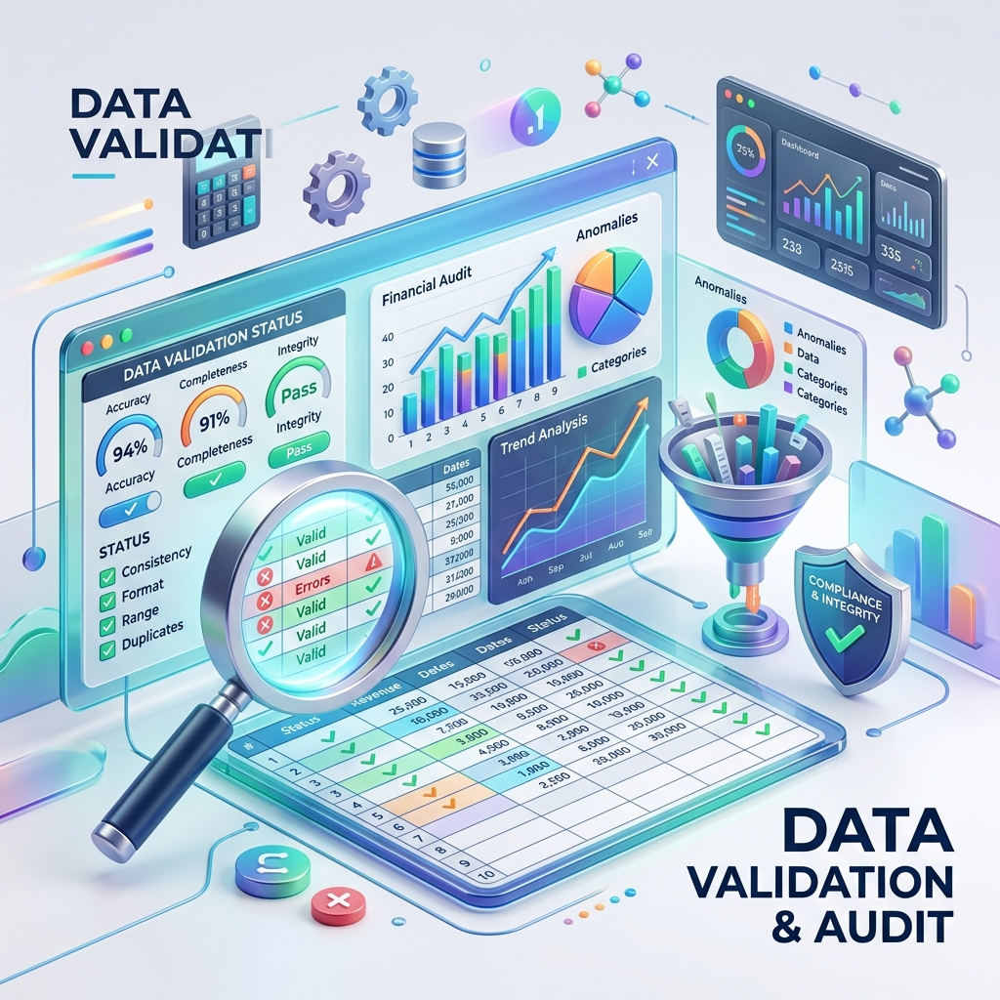

Veeva 시스템 고도화
Audit Trail Review 신규 모듈 도입 및 업무 프로세스 개선을 통한 전면 디지털화
Data Integrity × Digital Transformation
Driving Process Digitalization and Quality Assetization, Hero.
제약·바이오 현장 실무 경험과 IT/DI 거버넌스 역량을 연결하여,
단순한 규제 대응을 넘어 신뢰할 수 있는 데이터 기반의 디지털 품질 체계를 설계합니다.
Connecting biopharma field experience with IT/DI governance expertise
to design a reliable, data-driven digital quality system beyond simple compliance.
DI팀 선임
디지털 전환 주도 및 차세대 인프라 설계
IT팀 선임
거버넌스 표준화 및 인프라 고도화
IT팀 선임
시스템 보안 고도화 및 운영 최적화
IT팀 선임
DI 감시 운영 체계 및 기초 인프라 확립
사원
QC 고도화 및 데이터 무결성 강화
사원
품질관리 기초 확립
기업지원단 사원
Audit Trail Review 신규 모듈 도입 및 업무 프로세스 개선을 통한 전면 디지털화

신규 사이트 네트워크 아키텍처 수립 및 스마트 팩토리 기반 인프라 통합 조성

글로벌 실사 대비 SOP Gap 분석, DI 전사 교육 및 절차 개정을 통한 체계 고도화

수기 엑셀 템플릿의 밸리데이션 보증 및 Audit Trail 관리를 통한 데이터 무결성 확보
Mastersizer3000 등 신규 도입 정밀 기기 시험방법 밸리데이션 및 적격성 평가 성공적 수행

전사 시스템 공용 계정 전수 조사 및 접근 권한 원격 제어 재설정, 데이터 백업 규정 고도화
생명공학 학사 졸업
병장 수송특과 만기전역
이과계열 졸업 / 전교부회장 및 과학동아리 회장
2026.03
한국정보통신자격협회
최종합격
2025.01
한국정보통신진흥협회
최종합격
2024.04
한국데이터베이스진흥센터
최종합격
2022.09
130점 / IM3
2020.06
800점
2020.05
대한상공회의소
최종합격
2013.07
경찰청(운전면허시험관리단)
Google AI 전문과정
2022.10 ~ 2022.10
통계 기초 및 활용, 파이썬 데이터 분석 중급 과정 수강
2020.02 ~ 2022.03
GMP규정 및 품질관리, 제약공정의 이해, GMP기준서와 밸리데이선 이해
2020.08 ~ 2020.08
바이오의약품 제조 및 GMP 품질관리 실무 과정 수강
2013.05 ~ 2018.12
야구동아리 활동을 하며 선발 선수로 참여하였고, 부감독으로서 리더십을 발휘하여 리그 우승 달성
"위험을 선제적으로 통제하는 Global Compliance & Data Governance 전문가"
데이터 무결성(Data Integrity)과 품질 위험 관리(QRM)에 대한 전문성을 바탕으로, FDA/EMA 수준의 글로벌 실사에 완벽히 대응할 수 있는 품질 시스템을
설계합니다. 과거 QC 실무 경험을 통해 데이터의 생성부터 시스템 기록까지 전 과정을 아우르는 Hybrid Expertise를 갖추었으며,
노후화 설비의 재난 대응 체계(BCP) 구축을 이끌며 무중단 생산 환경을 보장합니다.
단순한 사후 대처가 아닌, 위험을 예측하고 통제하는 철학으로 신뢰할 수 있는 품질 관리 생태계를 만들어 갑니다.
새로운 프로젝트나 협업 제안은 언제나 환영합니다.
이메일로 연락주시면
빠르게 회신 드리겠습니다.